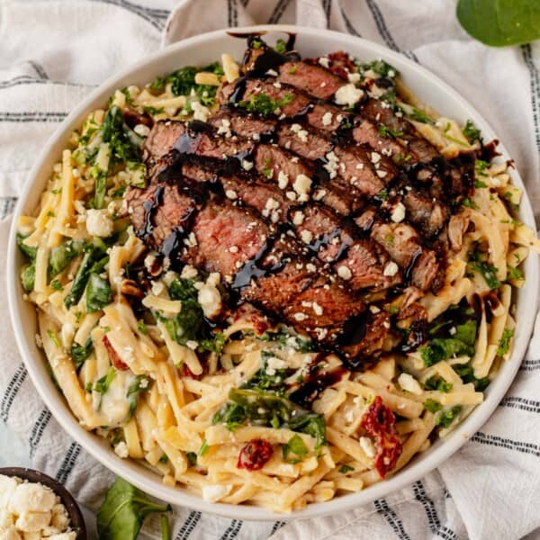

Steak Fettuccine Alfredo

Ingredients
- 1 1/2 lbs sirloin or ribeye steak
- 1/3 cup balsamic vinegar
- 2 Tablespoons olive oil
- 12 ounces fettuccine pasta
- 3 Tablespoons unsalted butter
- 3 cloves garlic minced
- 3 Tablespoons flour
- 2 cups milk or heavy cream
- 1 teaspoon kosher salt
- 1/2 teaspoon black pepper
- 1/2 cup parmesan cheese
- Salt and pepper to taste
- Optional toppings: balsamic glaze, blue cheese, fresh chopped parsley
Directions
- Season both sides of the steak with salt and pepper and place in a ziplock
or reusable storage bag with the balsamic vinegar and olive oil and marinate
in the fridge for 30 minutes, or overnight
- While the steak is marinating, cook the pasta according to the package directions.
Bring a large pot of salted water to a boil then add the pasta and cook until al dente.
Reserve 1/2 cup of the pasta cooking water then drain the pasta from the rest of the water and set aside.
- Heat a large skillet, like a cast iron skillet, over medium high heat. Remove the steak from the marinade, shaking
off any excess. Sear the steak for 4 minutes on each side or until it reaches your desired doneness. I like to remove
the steak when it reaches an internal temp of 135°F for medium-rare steak (target temp 145°F). Rest for 10 minutes.
- While the steak is resting, melt the butter in a deep skillet over medium-high heat. Add the garlic and cook for 1-2 minutes,
until fragrant. Add the flour to the butter and stir well to create a paste (a roux). Cook the roux for 2-3 minutes to ensure the
flour is fully cooked.
- Slowly whisk in the milk then add the salt and pepper. Continue to stir and simmer for about 5 minutes, until thickened. Add the
parmesan cheese and stir until melted and combined.
- Toss the cooked pasta with the alfredo sauce. If the sauce seems too thick, pour in the reserved pasta water a few tablespoons at
a time to reach your desired consistency.
- Slice the steak into thin pieces. Divide the pasta into bowl and top with steak slices. Drizzle with balsamic glaze and garnish
with gorgonzola cheese and fresh parsley if desired.
- Please Enjoy!
Exper Tips for a Perfect Steak Alfredo
- Choosing the right cut of steak is important. Opt for well-marbled cuts like sirloin or ribeye steak for enhanced flavor and tenderness.
- Aim for medium-rare to medium doneness to maintain juiciness. Use a meat thermometer for precision.
- If the sauce is too thick, incorporate a splash of reserved pasta water to adjust.
- Freshly grated Parmesan melts more seamlessly into the sauce compared to pre-shredded varieties.
Please Click the link below for the origional recipe
Origional Recipe
Please click the link below to be lead to the home page
Home